Agent-centric-real-to-sim · 归档于 2026-11-25
Real2Worlds2Real
Real2Worlds2Real: Scaling Self-Improving Agentic Real2Sim2Real for Robot Manipulation
归档到 Agent-centric real-to-sim：coding agent 从 RGB 视频建 digital twin、扩成 digital cousins、标定物理，正是这个文件夹的核心问题；后半段的 agent 自动做 policy 开发也和 Robotic harness 相关。代码未公开（项目页写 "Code soon"，2026-11-25 查过）。
TL;DR
- Problem
- 现有 Real2Sim 管线要么只重建一个外观像的 twin（螺纹、齿这类 task-critical 几何丢了），要么是固定流水线、出错不能回头改，物理也靠默认值；policy 训练也是固定流程。
- Idea
- 给一个通用 coding agent（GPT-6 Astra）一个 tool-orchestration harness：它自己选工具建 twin → 扩成 cousins → 标定物理 → 编排 policy 开发，每一步用渲染对比和仿真执行来验证、出错就回头改；验证过的做法沉淀成 personal skills 给下一个任务用。
- Result
- 真机 5 个精细任务全部最好（Table 1a，如 Gear 93.3% vs SimFoundry 40.0%）；world 数从 10 → 1,000，unseen 场景成功率 17% → 71%（Fig. 4b）；skill 库让建世界 token 从 28.1M 降到 13.9M（Fig. 5a）。
Problem
sim 里练出来的 policy 能不能上真机，取决于 twin 有没有把"任务要用到的那部分几何和物理"做对
Running example · 后面每个 stage 都跟着它走
拧瓶盖（Bottle-cap tightening, "Cap"）：输入是实验室一张桌子的 RGB 视频（桌上有储物盒、黑色水瓶 + 松开的瓶盖、蓝/白杯子、香薰瓶、果盘、湿巾桶，旁边是 Dexmate 双臂机器人）+ 任务描述 "pick up a loose cap, place it on the bottle, and screw it tight"，外加一段有人推动香薰瓶的视频。
→ 想要：一个能在 PhysX 里真的把盖子拧上的 digital twin 和一堆 cousins，在里面练出 policy，再上真机。真机只用 ACT + 60 条示教是 53.3%（Table 1a）。
flowchart LR IN["例子输入
RGB 视频
+ Cap 任务"] IN --> A1["ACT 只用真机示教
60 条 demo 直接训"] A1 --> AX["示教太少，覆盖不到摆放变化
Cap 53.3%"]:::gap IN --> B1["Real-World Training
在真机上继续 RL-decorator"] B1 --> BX["能到 93.3%，但每次 rollout
都花真机时间和人工复位"]:::gap IN --> C1["PolaRiS
重建 twin（splat + mesh）"] C1 --> CX["外观像，螺纹几何不准（推断）
Cap 63.3%"]:::gap IN --> D1["SimFoundry
模块化自动建场景"] D1 --> DX["task-critical 几何错
Cap 56.7%"]:::gap
论文只对 Gear 明确写了坏在哪（"SimFoundry reconstructs the gears without teeth and with inaccurate shaft spacing", §4.1）。Cap 一列 PolaRiS / SimFoundry 的"螺纹几何不准"是按同一段分析推断的：论文的结论是二者提升有限 "underscores the importance of accurate task-critical geometry"。Real-World Training 在 Cap 上和本文打平（都是 93.3%），它的问题是成本不是成功率。
根本问题：螺纹、齿、轴距这类决定任务成败的结构，固定的重建管线不会专门去建、也不会用执行来检查；物理参数也没人去对真实运动。 这篇的切入点：让 agent 写 Blender 脚本建可编辑资产，用"渲染对照片 + 仿真里真拧一次"来验收，没过就回头改。
Related work
| 相关工作 | 解决什么 | 怎么解决 | 和本文的区别 |
|---|---|---|---|
| 同一问题 · 别的解法 | |||
| 重建式 digital twin PolaRiS, Re3Sim, GSWorld, RialTo; PhysTwin | 从真实拍摄重建逼真的 twin | mesh / Gaussian 重建，常需 marker、手工分割和装配，物理用默认值 | 只出一个 twin、几何不保机构 → 本文建带关节/螺纹的可编辑资产，再扩成 cousins |
| Digital cousins / 生成式扩展 ACDC, SimFoundry, Seeing-to-Simulating | 扩大场景多样性 | 检索或生成保语义的资产，固定流水线 + 几何检查 | 上游错了回不去，物理靠 VLM 先验 → 本文 agent 用渲染和执行反馈回头改 |
| Agentic Real2Sim Agentic Real2Sim, ARSTAG | 用 agent 从录像/单图建任务场景 | 固定的 stage 图 + stage critic，失败后重采样布局 | stage 图和工具集是死的、不辨识刚体物理 → 本文动态选工具、对真视频回放标定、跨场景留 skill（本文所属的一族） |
| Real2Sim2Real 数据生成 DREAM, DexAgent, MimicGen, RoboGen, GenSim2 | 在 sim 里造示教练 policy | 状态专家、TAMP 或人体动作引导生成轨迹 | 世界是单一的、数据流程固定 → 本文把多样世界和 agent 编排的数据生成接起来，并研究 scaling |
| 相似做法 · 别的问题 | |||
| Agentic policy 开发 ASPIRE, ENPIRE | 让 agent 自动开发机器人 policy | agent 写脚本动作 / skill，在真机或 sim 里迭代 | Nut 这类任务靠脚本转动，对摆放敏感 → 本文脚本外再加闭环 policy（RL decorator） |
| 自我改进的 agent Voyager, Eureka, STOP, Darwin Gödel Machine | agent 越用越强 | 积累 skill 库、改 reward、改自己的代码 | 用在游戏/代码上 → 本文用在建世界和 policy 开发上，skill 带验证证据 |
来源：论文 §2 Related Work，和 §4 里对 PolaRiS / SimFoundry / ACDC / ASPIRE / ENPIRE 的对比；未另行检索。
Level 1 · Big picture
一个 coding agent + harness，同时负责"建世界"和"在世界里练 policy"，两边的经验都存成 skill
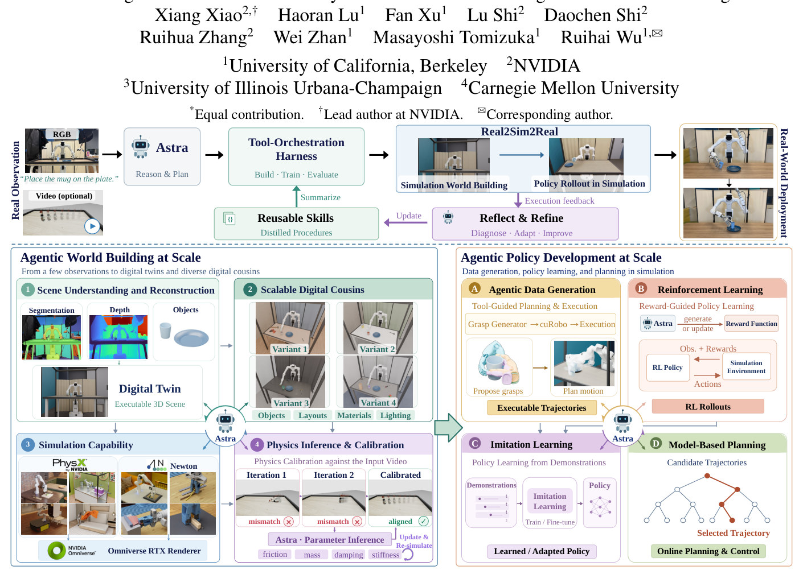
怎么读这张图
- 上排左 Real Observation：RGB 图 + 可选视频 + 一句任务（图里是 "Place the mug on the plate."）。在例子里就是那张桌子的视频和 Cap 任务。
- Astra (Reason & Plan) → Tool-Orchestration Harness (Build · Train · Evaluate)：Astra 是通用 coding agent（论文 LLM 声明：GPT-6 Astra），harness 给它共享工作区和工具。
- Real2Sim2Real 框：Simulation World Building → Policy Rollout in Simulation，下面 Execution feedback 进 Reflect & Refine（Diagnose · Adapt · Improve）。
- Reusable Skills（Distilled Procedures）：Reflect 的结果经 Summarize 写成 skill，再喂回 harness——这就是 "self-improving"。
- 下排左 Agentic World Building at Scale：① 场景理解与重建 → Digital Twin，② Scalable Digital Cousins（Objects / Layouts / Materials / Lighting），③ Simulation Capability（PhysX、Newton、Omniverse RTX Renderer），④ Physics Inference & Calibration（Iteration 1 mismatch → Iteration 2 mismatch → Calibrated aligned；friction, mass, damping, stiffness）。
- 下排右 Agentic Policy Development at Scale：A 数据生成（Grasp Generator → cuRobo → Execution）、B 强化学习（Astra 生成 reward）、C 模仿学习、D 基于模型的规划；最后上真机（最右 Real-World Deployment）。
flowchart TD I["Input
桌面 RGB 视频
+ Cap 任务"] --> W["Agent 建世界
twin + cousins
+ 标定物理"] W --> P["Agent 练 policy
ACT → RL"] P --> O["真机
Cap 93.3%"] W -.-> K["Personal skills
Thread clearance"]:::win P -.-> K
Level 2 · Stages
4 个 stage，外加一个贯穿全程的 harness
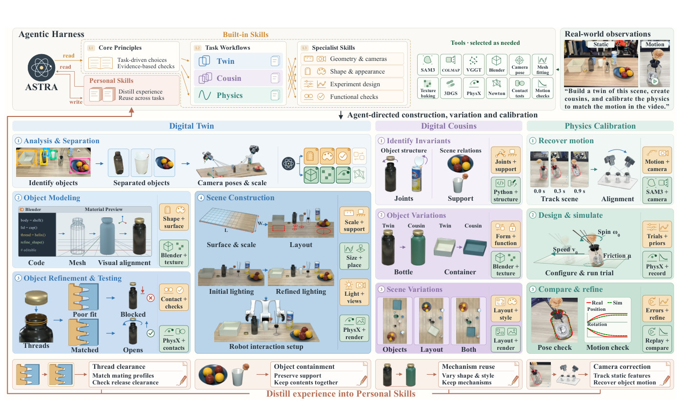
怎么读这张图
- 顶部 Agentic Harness：ASTRA 读（read）三层 Built-in Skills——L1 Core Principles、L2 Task Workflows（Twin / Cousin / Physics）、L3 Specialist Skills——并读写（write）Personal Skills。右边 Tools · selected as needed 列出 12 个工具。→ harness 细节
- 右上 Real-world observations：Static（例子桌面）+ Motion（推香薰瓶的视频），指令 "Build a twin of this scene, create cousins, and calibrate the physics to match the motion in the video."
- 下方三列：Digital Twin（①–④）→ Stage 1；Digital Cousins（①–③）→ Stage 2；Physics Calibration（①–③）→ Stage 3。每格右侧的小方块是这一步用的 skill（橙）和工具（绿）。
- 底部 Distill experience into Personal Skills：每列各沉淀一条 skill：Thread clearance、Object containment、Mechanism reuse、Camera correction。
flowchart TD S1["1 · Digital twin
带螺纹的瓶 + 盖"] --> S2["2 · Digital cousins
换形状/布局/房间"] S2 --> S3["3 · 物理仿真与标定
香薰瓶 μ 对上视频"] S3 --> S4["4 · Policy 开发
ACT → RL，真机 93.3%"] H["Harness + skills
验证 → 改 → 沉淀"]:::win -.-> S1 H -.-> S4 click S1 href "#stage-1" click S2 href "#stage-2" click S3 href "#stage-3" click S4 href "#stage-4" click H href "#stage-all"
点击 stage 展开 Level 3 细节；贯穿全程的 harness、验证和 skill 沉淀见 Harness。
Level 3 · Details
每个 stage 的细节
贯穿 Tool-orchestration harness：分层 skill + 执行验证 + 经验沉淀 任务 + 观测 → 每一步选工具、验证、回头改；成功做法 → personal skill
- Why：固定流水线不能回头改，也不会把这次学到的东西用到下次（§2.1 对 agentic real2sim 的批评）。
- Skill-guided orchestration（§3.1）：通用 coding agent + 共享工作区（保存不断演化的场景和之前操作的结果）。可复用的知识分三层：
- Core Principles：先满足任务需求；区分"观测到的"和"推断的"属性；用证据验证结果。
- Task Workflows：每个阶段（twin、cousin、physics）的高层流程、约束和验收标准。
- Specialized Skills：几何重建、关节建模、物理仿真等具体操作的指导，按需查阅。
- Execution-grounded refinement：渲染图对照片找视觉差异；仿真交互找物理失败（关节运动、接触、形变是否合理）。验证没过就用诊断信息改资产或物理参数再跑检查。
- Experience distillation：按 core principles 回看执行记录，把有效的构建/修正过程写成 personal skill：问题怎么发现、怎么解决、证据是什么、什么时候适用、新场景怎么改。personal skill 和内置 skill 分开存，用 coding client 原生的 skill 机制加载。
- Policy 侧同理（§3.3）：验证过的开发流程也写成 skill，记录何时适用、解决哪类失败（Fig. 2b）。
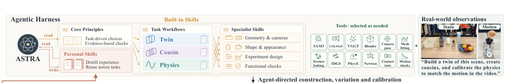
怎么读这张图
- ASTRA 的三条箭头：两条 read（读 built-in 和 personal skills），一条 write（只写 Personal Skills）——内置 skill 不改，经验只进 personal 层。
- L1 → L2 → L3 的交叉箭头：任意 workflow 可以调用任意 specialist skill（Geometry & cameras、Shape & appearance、Experiment design、Functional checks）。
- Tools：SAM3、COLMAP、VGGT、Blender、Camera pose、Mesh fitting、Texture baking、3DGS、PhysX、Newton、Contact tests、Motion checks。
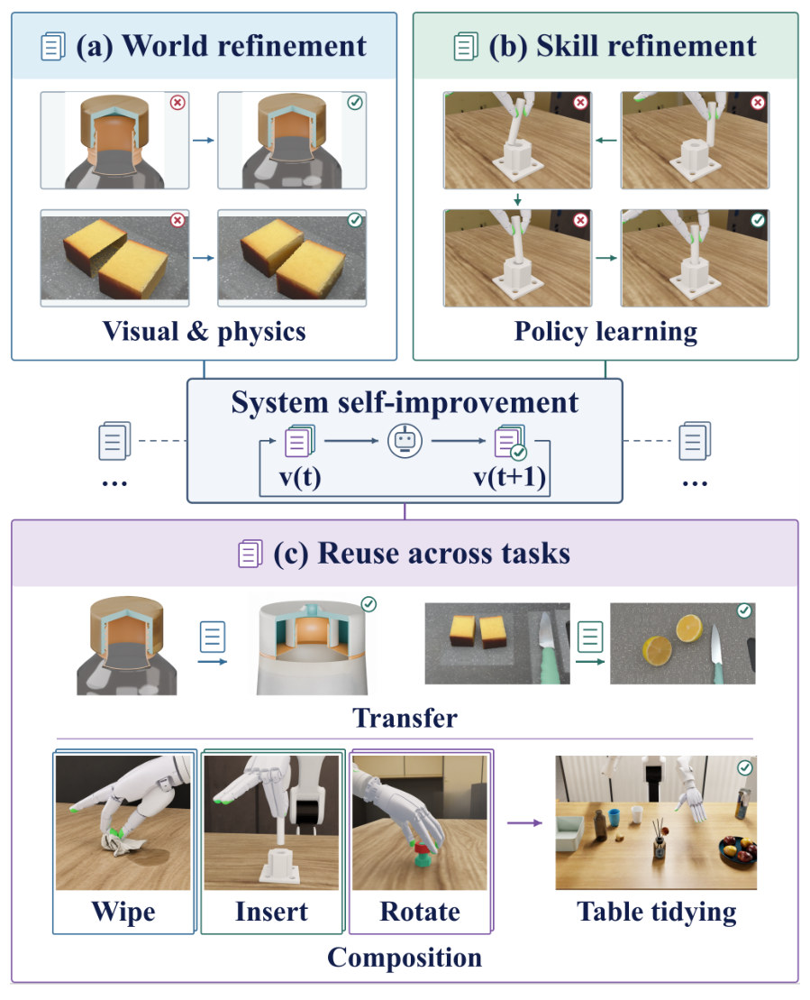
怎么读这张图
- (a) World refinement：Visual & physics——左边带红叉的资产改成右边带绿勾的（齿轮座、海绵块）。
- (b) Skill refinement：Policy learning——同一插入动作从失败到成功。
- 中间 System self-improvement：skill 库从 v(t) 变成 v(t+1)。
- (c) Reuse across tasks：Transfer（齿轮座经验用到新物体；切块经验用到切柠檬）和 Composition（Wipe + Insert + Rotate 组合成 Table tidying）。
Running example 在这一步
建瓶子时螺纹第一次"Blocked"、改间隙后"Opens"（Stage 1）→ 这次经验被写成 personal skill Thread clearance：Match mating profiles · Check release clearance（Fig. 3 底部最左格）。下次遇到别的螺纹物体（比如 Nut 任务的螺母螺栓），agent 先读这条 skill 再建模。
Stage 1 Digital twin：重建场景，物体建成可编辑资产 RGB 视频 + 任务 → USD 场景（可编辑物体资产 + mesh/3DGS 背景）
- Why：policy 能不能迁移看 task-critical 几何（螺纹、齿、腔体），splat 或通用 mesh 重建给不出这些结构。
- 物体（§3.2.1）：agent 写并反复修改 Blender 脚本，建出几何和任务相关的交互结构（关节部件、关节、可形变表面）。有额外线索时用：物体 mask 和深度约束可见几何；标定的多视角观测通过 silhouette fitting 精修参数化模型；已知尺寸的参照物给出度量尺度。
- 背景：单独用 mesh、Gaussian splats 或二者结合重建。复杂背景用 splat 保细节，桌面、障碍等接触面用 mesh 给碰撞几何。背景 splat 里含可操作物体时，harness 删掉物体原位置附近的 splat，agent 再检查渲染里有没有残影或缺块，必要时调整删除区域或重建。
- 输出：一个可编辑场景，后面的 cousin 生成和物理仿真都基于它。
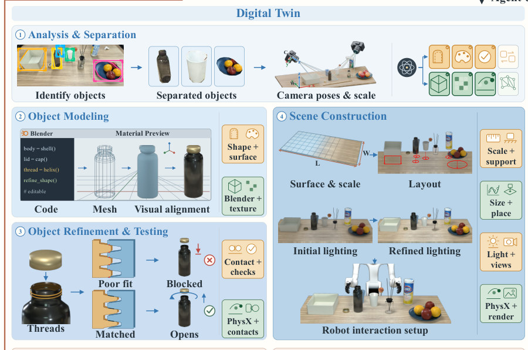
怎么读这张图
- ① Analysis & Separation：Identify objects（彩框标出盒子、瓶子、杯子、果盘）→ Separated objects → Camera poses & scale。
- ② Object Modeling：Blender 里的代码
body = shell()、lid = cap()、thread = helix()、refine_shape()→ Mesh → Visual alignment（材质对上照片）。资产是代码，所以可编辑。 - ③ Object Refinement & Testing：Threads → Poor fit → Blocked ✗，Matched → Opens ✓；右侧工具是 Contact + checks、PhysX + contacts。这一格就是我们的例子。
- ④ Scene Construction：Surface & scale（桌面 L×W）→ Layout（红框是物体落点）→ Initial lighting → Refined lighting → Robot interaction setup（放进机器人）。
flowchart TD a["分割 + 相机
SAM3 / COLMAP / VGGT"] --> b["Blender 脚本建模
shell + cap + helix"] b --> c["渲染对照片
边缘对不齐 ✗"]:::gap c --> d["改资产再检查
对齐 ✓"] d --> e["仿真功能测试
真拧一次
能拧到底 ✓"]:::win e --> f["背景 + 灯光 + 机器人
USD 场景"]
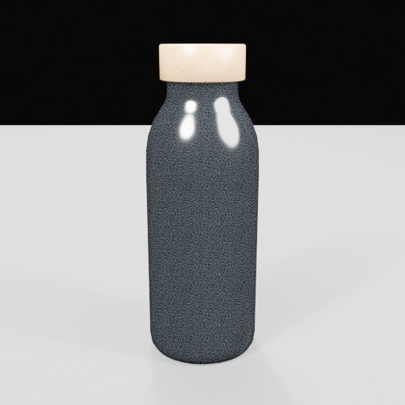
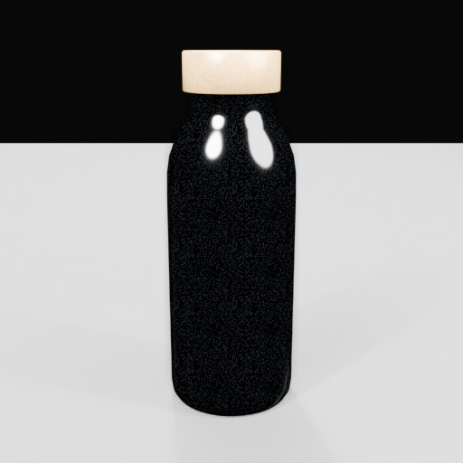
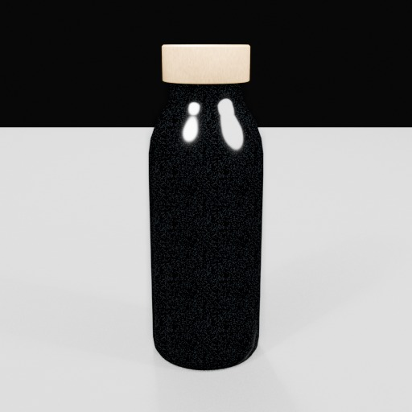
| 步骤 | agent 发现 / 修改了什么（项目页原注释） |
|---|---|
| Attempt 1 | 空心瓶 + 盖，单头螺纹：4.5 mm lead，0.22 mm radial clearance；烟色材质渲染发灰、噪点多 |
| Attempt 2 | 修正内螺纹槽，让入口保持全深；加 0.7 mm chamfer；材质更暗 + 体积吸收 |
| Attempt 3 | 把盖子表面分区来量尺寸：⌀ 50 mm 盖，闭合总高 190 mm |
| Contact test | 用真实凹 mesh 接触：拧开、脱开、重新咬合、拧到底；轴向行程等于螺纹导程 ✓ |
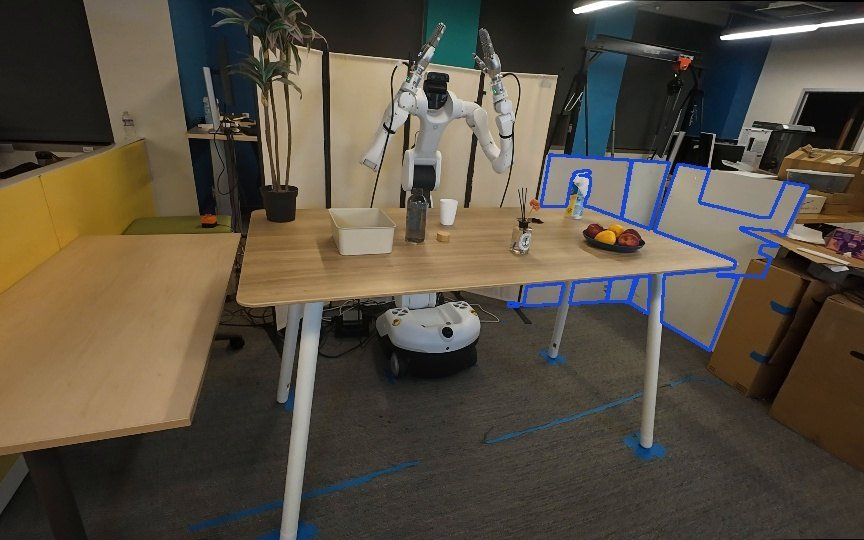
Running example 在这一步
桌面视频 → 分出瓶子、盖子、杯子等 → Blender 脚本建瓶 + 盖（单头螺纹 4.5 mm 导程）→ 第一次配合太紧拧不进（Fig. 3 "Blocked"）→ 改内螺纹槽和倒角 → PhysX 里真拧一次，行程等于导程才验收 → 和 splat 背景、机器人一起放进 USD 场景。
Stage 2 Digital cousins：保住机构，改形状、外观、布局和房间 一个 twin → 一族可执行的 cousin 场景（实验里 10–1,000 个）
- Why：一个 twin 只覆盖一种摆法；policy 泛化要多样世界（Fig. 4b 说明了 world 数量的作用）。
- 物体级（§3.2.2）：以 twin 为参照，改任务物体的几何、外观、材质；保留任务相关的交互结构（关节类型、连杆连接、关节体的控制角色、可形变物的附着关系）。也可以从现成资产库（LeHome、GarmentLab）检索。
- 场景级：把物体 cousin 和布局、背景外观、灯光的变化组合。布局变化先找出重要的空间和功能关系，再重新摆放物体，保证支撑稳定、机器人有操作空间、功能关系不破。
- 验收：每个候选场景都渲染并做任务相关的仿真交互，检查视觉合理、物理稳定、可操作，过了才收。
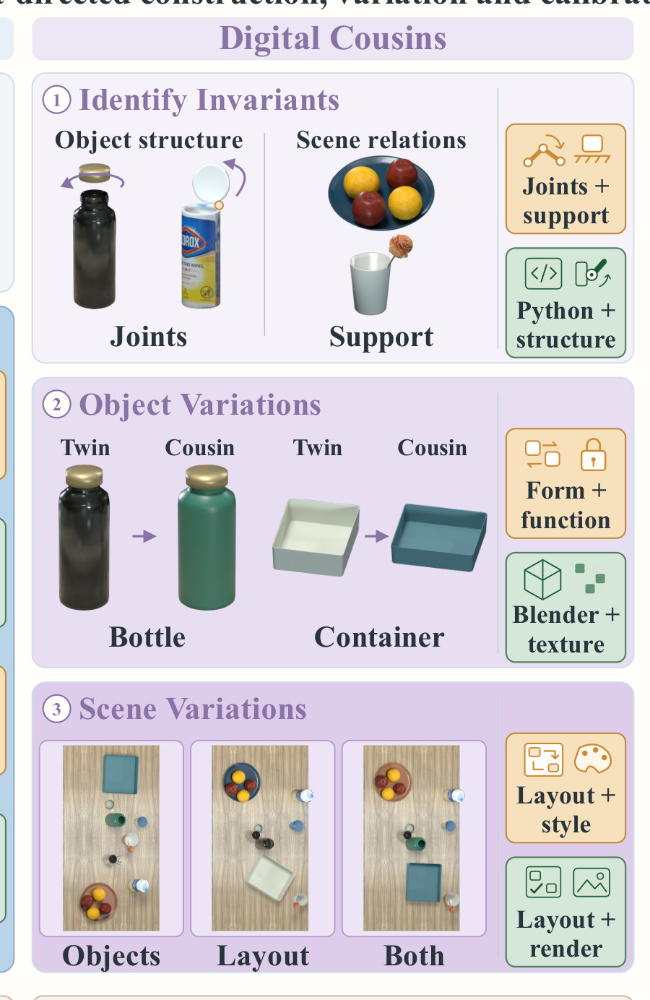
怎么读这张图
- ① Identify Invariants：Object structure 的 Joints（瓶盖旋转、湿巾桶翻盖）和 Scene relations 的 Support（水果在盘里、花在杯里）——这些在变体里必须保住。
- ② Object Variations：Twin → Cousin：黑瓶变绿瓶（盖子和螺纹不变）、白盒变蓝盒。工具 Form + function、Blender + texture。
- ③ Scene Variations：俯视图里只改 Objects、只改 Layout、两个都改（Both）。工具 Layout + style、Layout + render。
- 底部对应的 personal skills：Object containment（Preserve support · Keep contents together）和 Mechanism reuse（Vary shape & style · Keep mechanisms）。
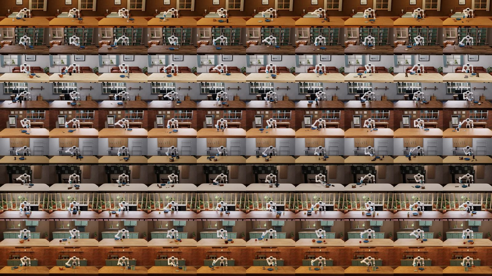
Running example 在这一步
黑瓶 twin → 绿瓶 cousin，螺纹和盖子的关节不动（invariant），只换形状和材质；果盘里的水果保持在盘里（support）；再换桌面布局、房间背景和灯光，每个候选都在仿真里验收。
Stage 3 物理仿真、推断与标定 资产 + 交互视频 → PhysX / Newton 物理模型 + 标定后的参数
- 仿真（§3.2.3）：刚体和关节体用 PhysX（碰撞几何 + 关节约束）；可形变物体按行为选表示：布用粒子表面、绳用杆模型、软体用体网格，用 PhysX 或 Newton 求解；细节表面由仿真形变驱动，渲染精度高而仿真分辨率不变。渲染用 Omniverse RTX，支持纯 mesh 或 mesh + Gaussian splat 背景的混合渲染。
- 推断（§3.2.4）：参数（质量、摩擦、阻尼、材料刚度）先从几何和材料估计初始化，例如质量 = 体积 × 假设密度；再用任务相关仿真检查是否合理（接触稳定、关节运动正确、形变合理），不对就改参数或模型配置重跑。
- 标定：有真实交互录像时，agent 找出能被观测运动约束的参数，设计仿真试验（初始条件、控制、候选参数范围）；harness 对每个候选重置仿真、施加并核实参数、记录轨迹；轨迹和真实观测对齐，算运动误差，指导下一轮。
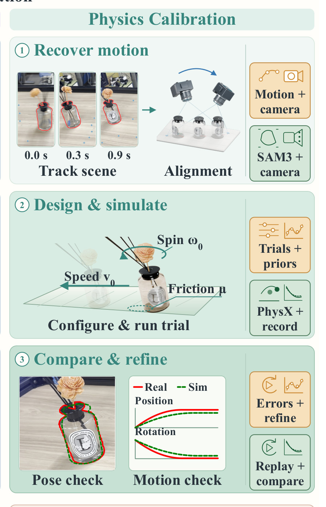
怎么读这张图
| 符号 | 白话 | 例子里 |
|---|---|---|
| v0 | 香薰瓶被推出去时的初速度 | 从视频跟踪恢复 |
| ω0 | 它被推出去时的初始自转速度 | 从视频跟踪恢复 |
| μ | 瓶底和桌面之间的摩擦系数 | 要标定的未知量 |
- ① Recover motion：Track scene——在 0.0 s / 0.3 s / 0.9 s 三帧里用 SAM3 分割香薰瓶（红轮廓），蓝点是静态特征；Alignment——恢复每帧相机位姿，把瓶子的位置放回同一坐标系。
- ② Design & simulate：Configure & run trial——在 PhysX 里给瓶子同样的初速度（Speed v0）和自转（Spin ω0），试不同的摩擦（Friction μ），记录轨迹（PhysX + record）。
- ③ Compare & refine：Pose check（红是真实轮廓，绿虚线是仿真）和 Motion check（Position、Rotation 曲线，红实线 Real、绿虚线 Sim）；误差大就改参数（Errors + refine，Replay + compare）。
- 底部 personal skill：Camera correction（Track static features · Recover object motion）——手持视频相机在动，先用静态特征校正相机。
Running example 在这一步
同一张桌子上有人推了一下香薰瓶：跟踪出它滑出去的速度和自转 → 在 PhysX 里用同样初始条件试多组摩擦 μ → 选和真实位置/转角曲线对得上的那组。瓶子和盖子的质量先按体积 × 密度初始化，再用"真拧一次"检查接触是否稳定。论文没有报告这个桌面上具体标定出的数值。
Stage 4 Agent 编排的 policy 开发 世界 + 任务 + 已有示教 → 选方法练 policy，看 rollout 失败再改 → 真机部署
- Why：不同任务适合不同方法（脚本、RL、模仿、MPC），固定训练流程做不到按任务选，也不会根据失败补数据（§3.3）。
- Code-as-policy：写可执行控制程序：从视觉分割定位物体，用 BODex 式抓取优化 + cuRobo 运动规划，或调用 MPC 按状态反馈更新动作；仿真反馈帮它改程序逻辑和工具参数。
- RL：agent 根据任务目标和仿真状态写 reward，训练基于状态的 RL policy；仿真反馈帮它改 reward。脚本和 RL policy 既能直接当 policy，也能生成示教。
- 模仿学习：用已有或仿真生成的示教训 ACT 或 Diffusion Policy；在各种 cousin 里采集示教扩大初始条件覆盖；有可用专家时做 DAgger 式纠错；也可以训 RL decorator（冻住基础 policy，用 reward 学残差动作修正）。
- 闭环：在仿真里评估、看失败决定补什么；验证过的流程写成 skill；最后选出的 policy 上真机。
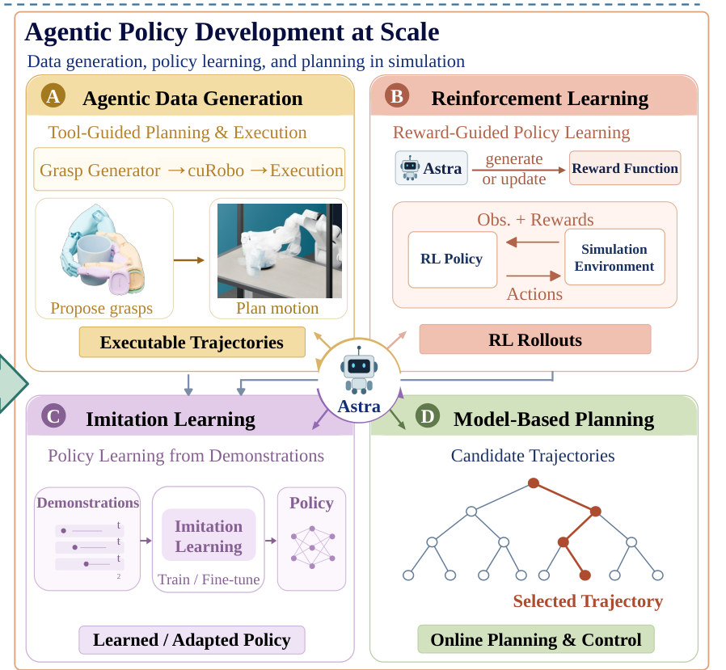
怎么读这张图
- A Agentic Data Generation：Grasp Generator → cuRobo → Execution，产出 Executable Trajectories（Propose grasps、Plan motion）。
- B Reinforcement Learning：Astra generate or update Reward Function；RL Policy 与 Simulation Environment 交互（Obs. + Rewards / Actions），产出 RL Rollouts。
- C Imitation Learning：Demonstrations → Imitation Learning（Train / Fine-tune）→ Policy，产出 Learned / Adapted Policy。
- D Model-Based Planning：Candidate Trajectories 树里选一条（Selected Trajectory），即 Online Planning & Control。中间的 Astra 在四者之间调度。
Running example 在这一步
先用 60 条真机示教训 ACT（真机 53.3%）→ agent 在 twin 里写 reward 训 RL / RL decorator，rollout 里看哪里失败（盖子没对准、没拧到底）再改 → 真机 93.3%（Table 1a）。论文的 Table 1(b) 没有 Cap 列；同类的旋拧任务 Nut 上，本文 73.3% vs ASPIRE 63.3%，原因是本文在脚本转动之外加了闭环 policy。
Recap：例子覆盖了论文的哪些 idea
| 论文里的 idea | 例子里在哪体现 |
|---|---|
| Tool-orchestration harness（三层内置 skill） | 贯穿：建瓶子时按 Twin workflow + Geometry/Functional checks skill 走，工具按需选 |
| 可编辑资产（Blender 脚本） | Stage 1：shell + cap + helix 脚本建瓶和盖 |
| Execution-grounded refinement | Stage 1：螺纹 Blocked → 改槽和倒角 → 接触测试行程等于导程才收 |
| mesh + 3DGS 背景 | Stage 1：桌面环境用 3DGS 重建（项目页 trace），隔板分区对齐 |
| Digital cousins（保 invariant） | Stage 2：黑瓶 → 绿瓶，螺纹不变；换布局、房间、灯光 |
| 物理推断与标定 | Stage 3：推香薰瓶的视频 → 标定 μ |
| Agent 编排 policy（脚本 / RL / 模仿 / MPC） | Stage 4：Cap 走 ACT → RL；Nut 走脚本 + RL decorator |
| Personal skills / self-improvement | 贯穿：Thread clearance、Mechanism reuse、Camera correction 写进 skill 库 |
| Scaling（数据量 / 世界数） | 例子之外：Stack Cups 任务（E3），世界就是 Stage 2 那种 cousin |
| Skill 复用的效果 | 例子之外：切柠檬（E6）和 LIBERO-Pro Long（E7） |
Results
建的世界能让 policy 上真机，世界越多越好，skill 越多越省、越准
顺序同论文 §4 的四个问题：E1/E2 真机能不能迁移（成功率）→ E3 数据量和世界多样性怎么 scale → E4/E5 世界本身的视觉、几何、物理保真度 → E6/E7 skill 复用能不能省 token、提成功率。大多比成功率或误差；E6 比 token 消耗。
E1用谁建的世界做 policy 精修，真机效果最好？§4.1 · Table 1(a)
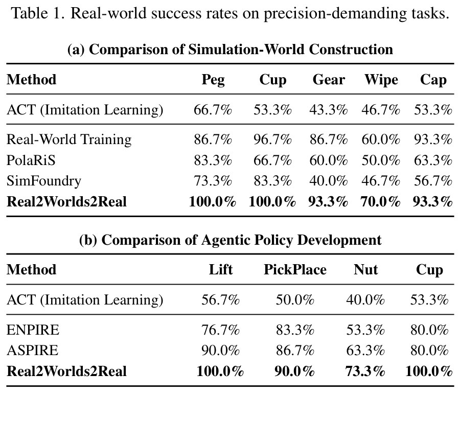
- 说明什么
- 成功率更高，五个任务全部最好。Peg 100.0 / Cup 100.0 / Gear 93.3 / Wipe 70.0 / Cap 93.3%；Real2Sim 基线里最好的 PolaRiS 是 83.3 / 66.7 / 60.0 / 50.0 / 63.3%；Real-World Training 在 Cap 上同为 93.3%，其余任务低于本文。
- 在故事里
- 核心主张：agent 建的世界几何准，在里面练出来的修正能迁移到真机；还因为能放更多物体摆法，同样数据预算下比真机精修更好。
- 指标
- 真机任务成功率，每个方法每个任务 30 次。各任务的成功条件见任务描述（如 Cap：拿起松开的盖子放上瓶子并拧紧；Nut：在固定螺栓上转满五圈）。
- 怎么评测
- Dexmate 机器人 + Sharpa 灵巧手 + Orbbec RGB-D 相机。
- 统一流程：先用 60 条真机示教训 ACT 作为初始化和模仿基线；所有方法用同样数据量的 RL-decorator 精修。
- Real-World Training 在真机上精修；PolaRiS、SimFoundry 和本文在各自建的仿真里精修，用同样的输入视频，并且都只建 digital twin（不用 cousins）。
- 没说的：每个世界花了多少 agent token / 时间；Real-World Training 用了多少真机交互。
E2同样在本文的世界里，agent 编排的 policy 开发比别的 agentic 框架强吗？§4.1 · Table 1(b)
看 Table 1 的下半 (b)。
- 说明什么
- 成功率更高，Nut 和 Cup 上差距最大。Lift 100.0 / PickPlace 90.0 / Nut 73.3 / Cup 100.0%，对比 ASPIRE 90.0 / 86.7 / 63.3 / 80.0% 和 ENPIRE 76.7 / 83.3 / 53.3 / 80.0%；ACT 基线 56.7 / 50.0 / 40.0 / 53.3%。
- 在故事里
- 说明 policy 侧的编排也有贡献，不只是世界好：ASPIRE、ENPIRE 在 Nut 上靠对螺母位置敏感的脚本转动，本文在脚本外加闭环 policy 按执行反馈调整动作。
- 指标
- 真机成功率，每任务 30 次。
- 怎么评测
- 三个 agentic 方法都在本文建的仿真环境里，各自策略下都能用那 60 条真机示教。
- ACT 只用这 60 条示教，作为模仿基线。
E3更多示教、更多世界，policy 会不会继续变好？§4.2 · Fig. 4
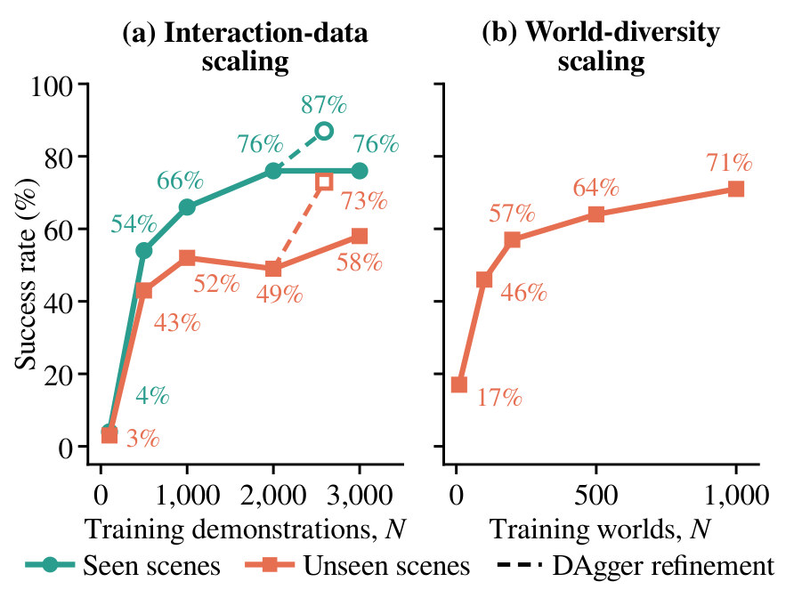
- 说明什么
- 两个方向都是越多越好，且互补。(a) 示教增加：seen 从 4% 升到 76% 后平台，unseen 平台在 52–58%；加 DAgger 后 seen 87%、unseen 73%。(b) 示教固定 1,000 条，世界从 10 增到 1,000：100 个 unseen 场景上 17% → 46% → 57% → 64% → 71%。
- 在故事里
- 说明 cousins 不是装饰：同样的数据预算下，世界多样性本身能提升泛化。
- 指标
- Stack Cups 任务的仿真成功率（seen / unseen 场景）；(b) 在 100 个 unseen 场景上评估。
- 怎么评测
- 为了隔离世界本身的作用，不用 agentic policy 开发，统一用 Diffusion Policy、固定训练设置。
- (a) 在一组固定的世界里随机初始位姿采示教；世界数没写。DAgger 由 agent 从失败 rollout 收集纠错示教。
- (b) 世界变化来自物体 cousin、布局和背景。
- 这是仿真评估，没有真机 scaling 曲线。
E4建出的世界和真实场景有多像？agent 和 refinement 各贡献多少？§4.3 · Table 2
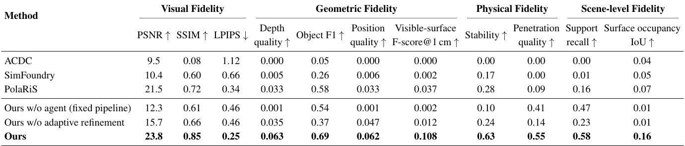
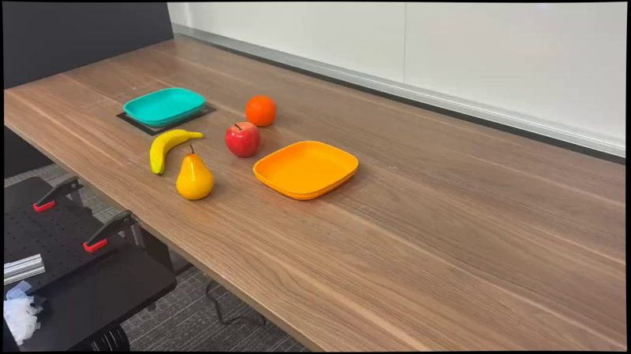
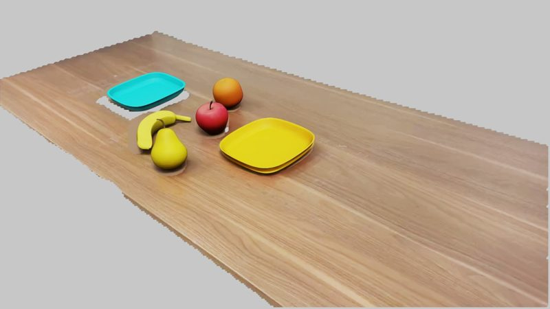
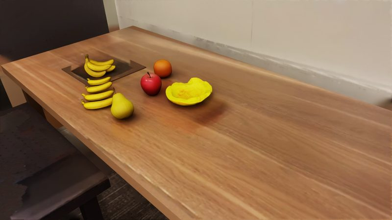
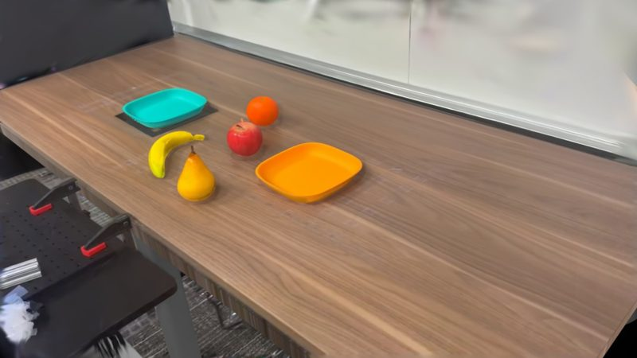
- 说明什么
- 四类保真度全部最好，两个消融都明显变差。PSNR 23.8（PolaRiS 21.5）、Object F1 0.69（0.58）、Stability 0.63（0.28）、Support recall 0.58（0.16）。去掉 agent（固定流水线）PSNR 12.3、F1 0.54；去掉 refinement PSNR 15.7、Stability 0.24。ACDC 和 SimFoundry 大多数几何指标接近 0。
- 在故事里
- 把 E1 的真机优势归因到世界质量，并用消融说明"agent 编排"和"反馈修正"两样都必要。
- 指标
- 视觉：参考视角渲染的 PSNR/SSIM/LPIPS；几何：深度质量、物体检测完整度（Object F1）、3D 摆放（Position quality）、参考可见表面 F-score@1 cm；物理：重力下的动态稳定性和 PyBullet 中无穿透摆放；场景：物体间支撑关系（Support recall）、表面占据 IoU。完整定义在补充材料里（arXiv PDF 不含）。
- 怎么评测
- Fruits、HOPE-Video、ARKitScenes 的真实拍摄；每个方法拿自己规定的输入，打分不做事后对齐或缩放。
- 不做事后对齐会惩罚尺度/坐标没对上的方法，这可能是基线几何分接近 0 的原因之一（推断）。
E5从一段 RGB 视频估物理参数，准吗？§4.3 · Table 3
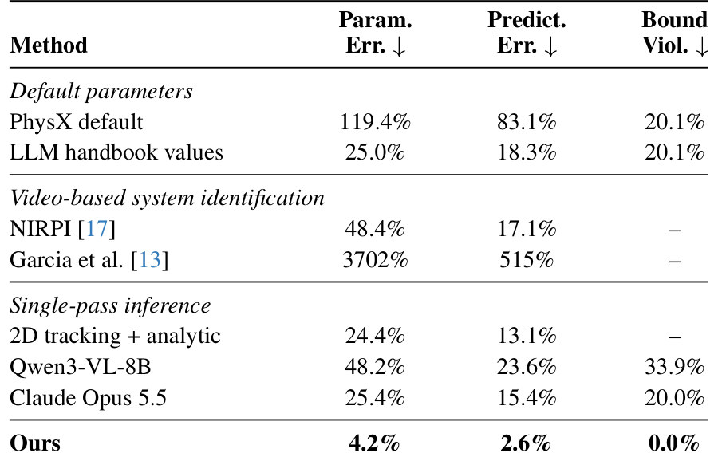
- 说明什么
- 误差最小、七个任务全覆盖。参数误差 4.2%（次好 2D tracking + analytic 24.4%），运动预测误差 2.6%（次好 13.1%），边界违反 0.0%（其他 20.0–33.9%）。
- 在故事里
- 支撑 Stage 3：仿真里试参数、和真实运动对齐的闭环，比直接让 VLM 猜或用默认值准得多。
- 指标
- 参数准确度（相对参考值的误差）、留出试验上的运动预测误差、物理一致性（摩擦边界是否满足观测到的运动约束）；细节在补充材料。
- 怎么评测
- 七个参数估计任务，取自 EV-RealPhys、GAUGE、IRIS 的真实视频，参数是摩擦、恢复系数、摆长。
- 所有方法同一协议；但各方法覆盖的任务数不同（表里 "–" 是没报），论文说本文覆盖全部七个。
E6skill 库能让建新世界更省吗？§4.4 · Fig. 5(a)
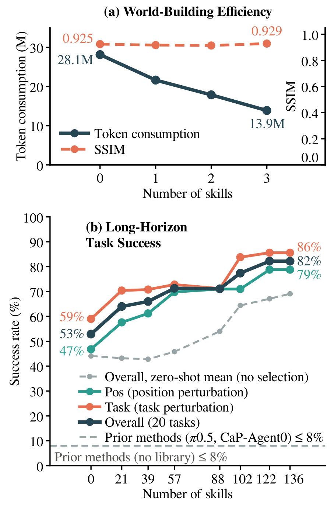
- 说明什么
- token 减半，质量不变。skill 从 0 到 3 个，通过验证所需 token 从 28.1M 降到 13.9M（约 50%），SSIM 0.925 vs 0.929。
- 在故事里
- 说明 agent 是在复用存下的流程，而不是重新试错。
- 指标
- 通过验证所需的 token 数；重建质量用 SSIM。
- 怎么评测
- 留出任务：切柠檬。四个嵌套 skill 库：基础 skill → + 相关任务的水果处理经验 → + 几何切割 skill → + 完整交互切割 skill。
- 输入和验证标准每次相同。单个任务、每档一次，未报方差。
E7skill 库能让 policy 侧的长程任务更成功吗？§4.4 · Fig. 5(b)
看 Fig. 5 的下图 (b)。
- 说明什么
- 成功率随 skill 数持续上升。skill 从 0 到 136，总体 52.9% → 82.2%；位置扰动 46.8% → 78.8%，任务扰动 59.0% → 85.6%；不挑最优、所有候选程序的平均也从 44.1% 升到 69.1%。没有 skill 库的 π0.5 和 CaP-Agent0 不超过 8%。
- 在故事里
- 说明 skill 让 agent 写出更好的程序，而不只是挑得更好。
- 指标
- LIBERO-Pro Long 的任务成功率，每个任务 50 个留出初始状态。
- 怎么评测
- agent 为 20 个长程任务写控制脚本，一半位置扰动、一半任务扰动；skill 来自其他任务。
- 这是 LIBERO 的仿真，不是本文 real2sim 建的世界；π0.5 是 VLA，与写代码的 agent 不是同类比较。
Limits
局限和开放问题
- 代码没放出：项目页 "Code soon"，GitHub 上只有网站仓库；harness、skill 内容和 prompt 都看不到，无法复现。
- 核心 agent 是 GPT-6 Astra（LLM 声明），换成别的模型效果如何没有实验。
- Table 1(a) 里 Real2Sim 方法都只建 twin、不用 cousins，所以真机对比没测到 cousins 的贡献；cousins 的作用只在仿真里（Fig. 4b）。
- 没有报告建一个世界的总 token / 时间 / 失败率；只有切柠檬一个任务的 token 曲线（28.1M → 13.9M），说明成本不低。
- Table 2、3 的指标定义和任务细节在补充材料里，arXiv PDF 不含；Table 3 各方法覆盖的任务不同。
- 真机只有一台 Dexmate + 灵巧手，每任务 30 次；E6 是单任务单次。
For Agent-centric real-to-sim
对我们有什么用
- WorldClaw skills 可以照它的分层：Core Principles（区分观测/推断、要证据）+ 每阶段 Task Workflow 的验收标准 + Specialist skills，再加只由 agent 写的 personal skill 层（问题、解法、证据、适用条件）。
- real2sim-anything-indoor 的 Blender 建模可以加两类检查：模型边缘投回视频帧的对齐检查，和按物体功能做的仿真测试（螺纹拧到底、抽屉拉开），不过就回头改脚本。
- 要比较时可借 Table 2 的四类指标（视觉 / 几何 / 物理稳定性与穿透 / 支撑关系）评我们的室内 twin；但它本身没代码，进不了 Real2Sim-baselines 的实跑对比。